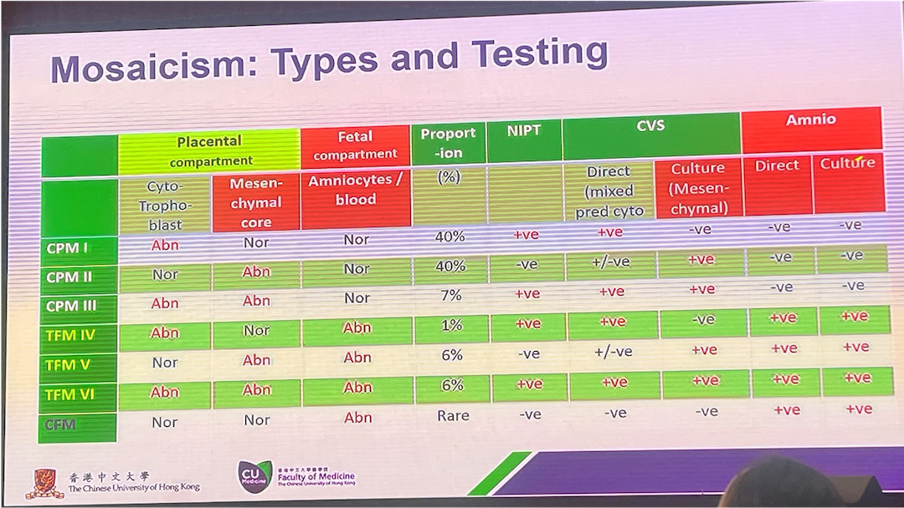

PGDIS 2024
üìÖ May 6-8 2024 üá≤üáæ Kuala Lumpur, Malaysia
2024-05-22
Conference Agenda
- Day 0 (Sun): Pre-conference workshop (Thermo Fisher PGT solutions, carrier screening, methylation, TGS)
- Day 1 (Mon): Advances in PGT + Contraversies in PGT
- Day 2 (Tue): Contraversies in PGT + Embryo selection + niPGT + genetic counselling + Gala dinner
- Day 3 (Wed): Quality in IVF + Inovations in Preimplantation Genetics
Thermo Fisher Scientific’s NGS Solutions For PGT
Whole Workflow: Lab Prep + Sequencing + Analysis + Reporting
- Library Prep (DNA extraction, WGA and barcoding) and Template Prep (automated clonal amplification)
- Sequencing (Ion Semiconductor Sequencing):
- Analysis and Reporting:
PGT-A
Ion ReproSeq™ PGS
- Detect whole-chromosome, mosaic, and small copy number events with just 6 pg of DNA from single or multiple cells
- Multiple kit configurations to analyze from 16 to 192 samples in a single run
- Mosaicism detection, gender masking, and improved data plotting (for easier data interpretation)
- Together with the Ion AmpliSeq™ Polyploidy Panel can confidently identify triploidy 69, XXX, assess potential maternal contamination, and track sibling samples, preventing sample mix-ups.
- Turnaround time for the Ion ReproSeq PGS Kit 16 samples/run is <10 hours with <2 hours of hands on time.
PGT-M
PGD-SEQ™ Panel and Reagent Kits
- >500 gene panels for common and rare monogenic diseases for IVF
- Complete kit reagents and targeted PGT-M library to analyze 15 samples
- Comprehensive familial carrier status using proprietary linkage analysis software
Simultaneous PGT-M and PGT-A using a single embryo biopsy
Epigenetics Testing
Preimplantation DNA methylation Screening (PIMS)
- Current PGT mainly focus on genetic causes
- Only about 1/3 of birth defects can find reasons
- Both genetic and epigenetic factors can cause birth defects
- Compared to standard PGT-A, PIMS increases pregnancy rate and live birth rate by 10-15%
- Exclusive methylation-based artificial intelligence to improve accuracy and to avoid subjectivity
Mosaisism
- IRMET (international registry of mosaic embryo transfer) (irmet.net)
- Kilder til mossaikk: endogene, indusert, artifaktisk
- 20-30% mosaikk-tilstander er alt for høyt - må da finne avvik (RMA, lab/operatør, osv)
- Gold standard: celle linjer (blinded?), brukes for å validere og definere “cut off”/støy hos oss
- Kjøre OM alle segmentale aneueploidier (Rana et. Al, 2023; D. Marin)
- Hvordan rapporteres dette?
- Det er caser med uheldige utfall, med disse er undertrykt/ikke publisert pga juridiske problemer
Mosaikk
Mosaikk fort.
Mosaikk fort.
Mosaikk, rapportering
Mosaikk-embryo klassifisering for et redusert embryotap, v/Steve Grkovic (genea, Australia)
mosaikk, rapportering
mosaikk, rapportering
Medlem av PGDIS (David Cram) om mosaikk
- Hvordan definere cut-off for “lav-” og “høy”-gradig mosaikk:
- Alt. 1: bruke 50% som cut off
- Alt. 2 er å ta støynivå satt av laboratoriet til betrakning.
- Hvis støygrense er 20% for å definere euploid vil:
- Måling av 30% kan være så høy som 50% eller lav som 10%
- Måling av 40% kan være så høy som 60% eller lav som 20%
- Måling av 50% kan være så høy som 70% eller lav som 30%
Mosasic transfer
- >99% of live births from mosaic embryos transfer have no detectable abnormalities (Note the prerequisites of ongoing pregnancy, i.e. no implantation failure, no miscarriage)
- Low-level mosaicism has a better outcome for implantation and pregnancy. But mosiac level “currenly” does not predict the risk of being in the <1% of live births with abnormalities.
Oversikt platformer
- PGT-A: trenger kun kopitall, vanligvis med lav-dekning sekvensering (<0.1X dekning), ca 10Mb størrelse
- PGT-SR: lav-dekning sekvensering kan detektere ubalanser. Trenger SNP-analyse for å skille bærer fra normale
- PGT-M: linkage eller SNP-analyse (haplotyping eller direkte deteksjon av mutasjonen)
- PGT-P: trenger SNP-analyse
- PGT-WGS: alt over, trenger SNP-analyse
PGT metoder
SNP array Genotyping
Karyomapping, Haplarithmisis. High throughput SNP array, HaploSew, APCAD, Genome pridication PGT-PS, Hapltype-Aware, Whole genome prediction
NGS genotyping
PGT Complete, One PGT, Genotyping by sequencing, Cheb et al., HaploPGT, S-HaploSeek
Sekvensering og target SNPs
PGT-Seq (Revvity), OneGene PGT
Utfører WGS embryo screening
- Gattaca Genomics (Florida, USA)
- Orchid: genpanel med 1,400 gener for arvet patogene sykdommer og polygen risiko)
- Panacea – GenomeScreen TM: >2,500 sykdomsfremkallende gener for arvelige eller nye de novo-mutasjoner (GenEmbryomics/Progensis Inc)
- Foredlere ved x30 dybde og embryoer ved 50x dybde
- Omfattende variant filtrering for å eliminere FP
- Variant annotering utført fra >50 annoteringskilder, algoritmer for prediksjon av patogenisitet, og ACMG guidelines
- Benchmarking: Genome in a Bottle, flow-sorted GIAB celle linje, sammenlignet gDNA og amplifisert DNA (RepliG), vurdert med hap.py/VCFEval (Conrad Nat. Genet. (2011))
- Binning approach (hadde problemer med targeted CNV)
- De nova mutasjoner: nøyaktighet beregnet etter filtrering men før annotatering
- niPGT: lav og variable DNA fragmenter –> ikke så robust
Quality in IVF
- Juno Genetics (v/Dagan Wells) tar video av overføringer.
- Cytogenomix laboratory in Malaysia: Utfører shipping validation for IVF-lab som har forhøyet amplifiseringsfeil.
- For NGS-basert metode: amplifisere mtDNA fra WGA-produkt (mtDetect Web App, skybasert m/server i USA).

de novo mutations or incomplete pedigree
- Nesten ingen som gjør dette per i dag, var diskusjoner om hvorvidt man skal begynne å rapportere dette. Joris fra Leuven snakket om dette. Hvis vi begynner å rapportere dette for embryo vil det være et paradigmeskifte. De Novo krever så mange som mulig embryobiopsier for å skille ulike haplotyper.
- Hva ender man til slutt med å kunne sette inn ved WES/WGS for DeNovo mutasjoner?
- Long-read sequencing (and direct haplotyping) when incomplete pedigree, de novo mutations (Yikon).
AI
re-classification of mosaic embryos (CooperSurgical)
- Mosasic Resolution by Decompositon
- Clinical and theoretical decomposition to estimate mosaicism
- Copy number variation (CNV) and allelic balance
Grading/Selection Embryos
Non-invasive PGT (niPGT)
- During in vitro development, mostly from day 4 to 6, embryo cell-free DNA (cfDNA) is released to the culture medium, with higher concentrations as the number of cells increase at blastocyst.
- informativity rates on D6: 98.8% (D5: 81.8%)
- ploidy concordance TE on D6: 89.1% (D5: 76%)
- concordance rate with full frozen blastocyst/ICM: up to 93.7% D6/7
PGT-A
PGTai 2.0 (CooperSurgical) VS PGTseq-A (JunoGenetis) VS PG-Seq Rapid v2 Kit (Revvit)
PGTseq-A: NGS of thousands of sites on each chromosome to get accurate copy number information and SNPs
PGT-A
PGTai 2.0 (CooperSurgical) VS PGTseq-A (JunoGenetis)
PGTai 2.0: Also NGS and combines copy number information with SNPs, but powered by AI

Kontaktpersoner
- Carmen fra iGenomix Valencia
- Edith Coonen (fikk info om at hun var go-to for PGT-SR)
- David Kubicek Poster 29
- Aaron Chen fra Malaysia som har brukt Karyomapping og Embryomap i mange år
- Silja Lu fra Yikon (lusijia@yikongenoics.com)